Feather Beyond
Feather Beyond is a prototype for a story-driven 2D RPG in the style of early Console RPGs. The player follows Yuki, a student fearing stagnation in his life. Usually he avoids this fear by talking to his friend, however this friend vanished suddenly and a crow appeared in his stead. Aside from that Yuki can now travel into the 'Echoworld' - a world where people's desires are being transmitted into their surroundings. With the power of Hope he needs to shield these people from their despair and help them overcome difficulties in their life. And maybe he might even grow himself...
- Genre: 2D RPG
- Engine: Unity Game Engine
- Role(s): Lead Developer, Lead Game Designer, Narrative Designer
- Team Size: 7
- Development Time: 3 months
Want to take a look?
My Contributions
Programming
Design and Implementation of an Event System based on Unity Scriptable Objects
Design and Implementation of a Turn-based Combat System and UI for the Combat Screen
Implementation of Movement and a Inventory System
Implementation of a simple Camera Movement for a more 'cinematic' feel
Design and Implementation of an State-Machine based Action System
Leadership
Help teammembers get used to the Tools
Spreading and fine-tuning the Game Vision to and with the other teammembers
Introduce teammembers with less experience to advanced Software Development concepts, patterns and workflows in Unity
Game Design
Providing constructive feedback to the other Game Designers
Ensuring a coherent Game Vision
Narrative Design
Writing NPC Dialgues for the Overworld and Echoworld
Retrospective and Learnings
Feather Beyond was my second experience working with an internationl team consisting of students from Mexiko, Japan and Germany.
Differing from the first time however were my roles in this experience. I already started pretty front and center in this project, as I was chosen
to hold an impromptu opening talk to the international students, since Professor Broca recognized me from the [Ex]Change Project and wanted me to
talk a bit about my experiences. And the role-reversal did not stop there: As I was made both the Lead Game Designer and the Lead Programmer for Team 2, working on Feather Beyond.
Looking back I feel like I was in a bit over my head, but I approached the presented challenge like any other - with a cool head and a plan.
I knew that a great deal of trust was placed in me and I felt very honoured. I naturally tried to live up to this trust and support my team in any way I could.
I incorporated some of the knowledge gained during [Ex]Change and worked very hard to bridge gaps between cultures and overcome the language barrier.
I tried to smooth over some bumps
that I knew could occur. Like the fact, that the UNAM students only ever conceptualized games in their studies,
not actually made any prototypes and therefore were not familiar with Engines and how their Art Assets would do in an Engine. Or the fact, that Japanese students preferred to communicate in text, but preferred meetings
with Webcams in order to have facial expressions to connect with the messages. So I shared all this knowledge with my teammembers and went to work.
Of course not everything went perfect, but it went well enough that we finished our very tight timeline and had a finished prototype for the Tokyo Game Show.
But the greatest part of the experience is: I still have contacts to other international team members and I could not be happier.
Overall it was a very pleasant experience, one which I would love to do again.
Learnings from this project
- Usage of the same "common phrases" can lead to vastly differing interpretations, a common ground needs to be established first.
- Different Cultures handle deadlines very differently, both in communication and work
- Double check, that everyone holds onto the same vision for the game
Play Across Borders
Feather Beyond was created as part of the 'Play Across Borders' project between the Hochschule Harz, the Tokyo University of Technology and the Universidad Nacional Autónoma de México. Said Project was showcased at the Tokyo Game Show 2025.